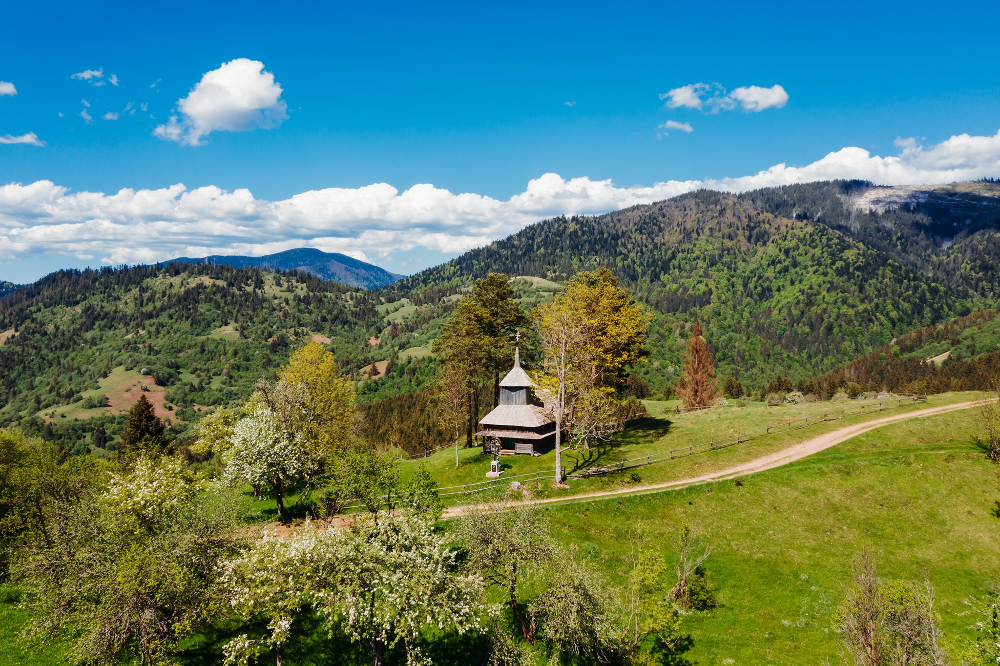
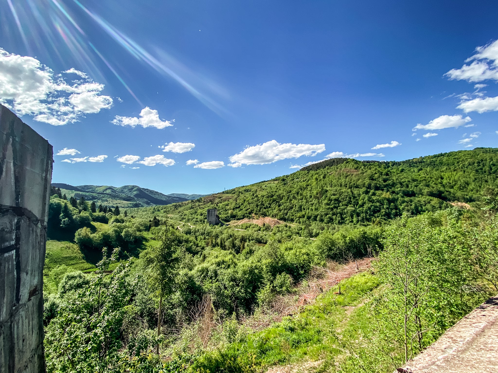
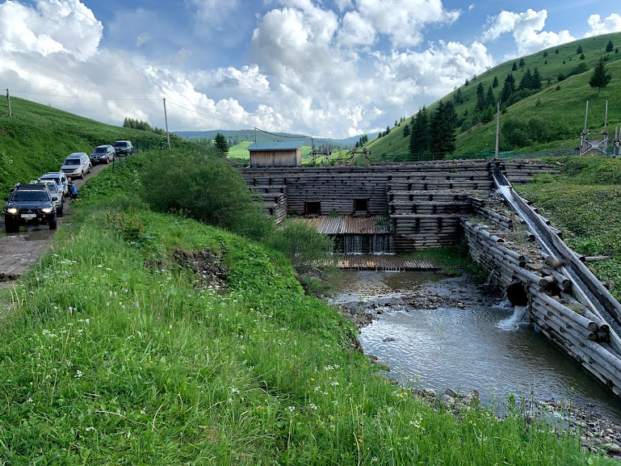

Зимова Руна
Нарешті ми крокуси знайшли. І не тільки крокуси. Незвично, що в ці
числа було ще стільки снігу в горах. Відвідали кілька локацій, цілком
типових туристичних, як от Синевир та водоспад Шипіт. Не такий вже
популярний Вучківський Гейзер (про нього буде окремий допис) змусив
чеккати нас на своє виверження аж 2,5 години. І в час карантину без
натовпів туристів та яток торгашів, ці місця виглядають прекрасно. А
ще ми знайшли класні місця для наметів, а ще 5-ту карпатську
мегагойдалку. І ще одне таємне місце, яке залишили на наступні
подорожі

Що будемо робити:
- 1 день Виїзд зі Львова – Тустань – водоспад Гуркало – Бубнище (Скелі Довбуша) – с. Камянка (водоспад)
- 2 день Тухля – Великий Верх – Хащованя – водоспад Шипіт – Боржава
- 3 день Бункер Арпада – кінна ферма – полонина Руна – Лумшори
- 4 день Колочава. Похід на г. Стримба
- 6 день Свидовець
- 7 день Верховина, Писаний Камінь- вдсп.Гук

За що ви платите:
- за некомфортну, але з нами безпечну поїздку (спеціально підготовленими позашляховиками)
- за паливо
- за супровід гіда: ми знаємо місця, що лежать поза межами туристичних маршрутів та асфальтованих доріг
- за триразове харчування в польових умовах

Додатково оплачуются:
- проживання в отелях
- прокат спряження (намети, спальники)
Звичайно, ми радо вислухаємо ваші побажання та пропозиції.
Асфальтом їдемо __ км, поза асфальтом __ км
Маршрут проходить лісовими дорогами, без шкоди довкіллю.
Хочеш перевірити сили свого позашляховика в нашому турі – радо обговоримо!
Асфальтом їдемо __ км, поза асфальтом __ км
Маршрут проходить лісовими дорогами, без шкоди довкіллю.
Хочеш перевірити сили свого позашляховика в нашому турі – радо обговоримо!